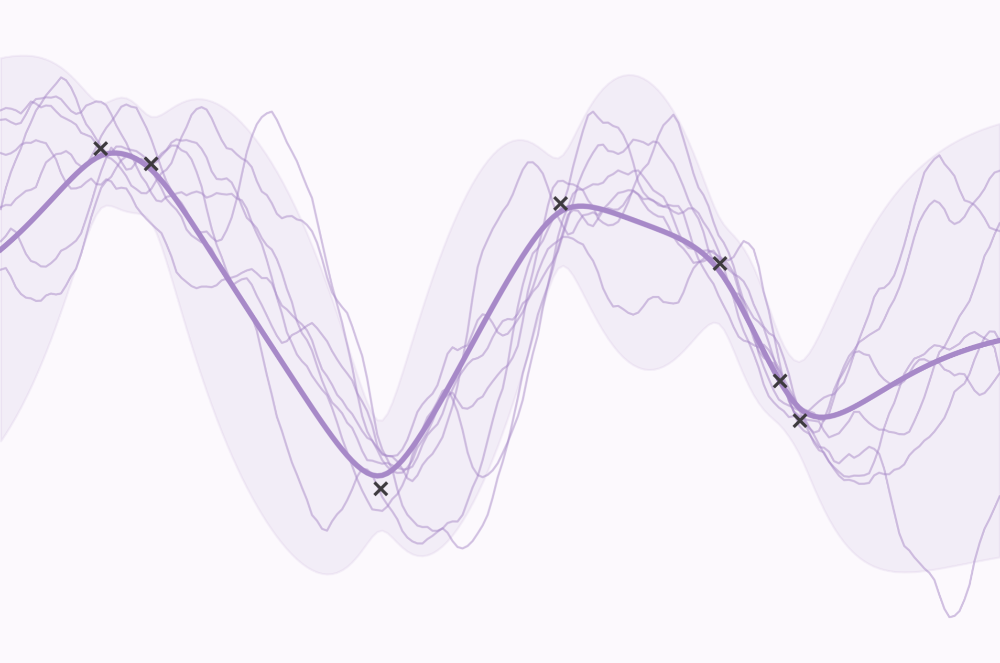
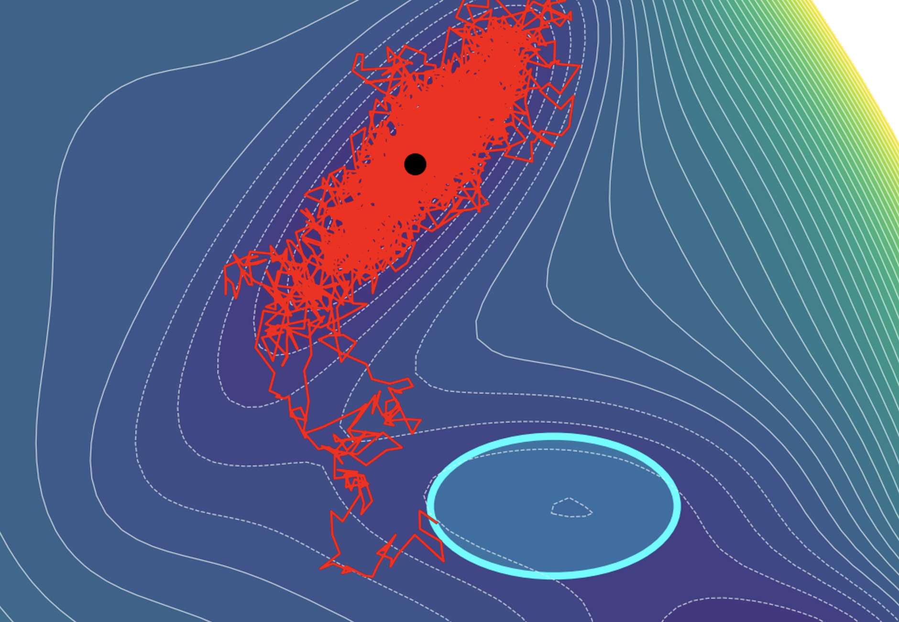
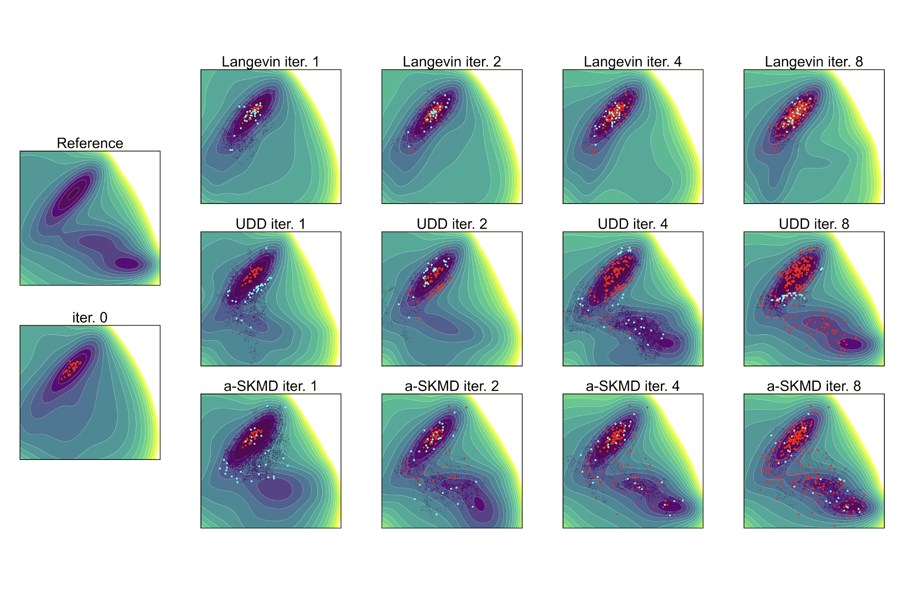
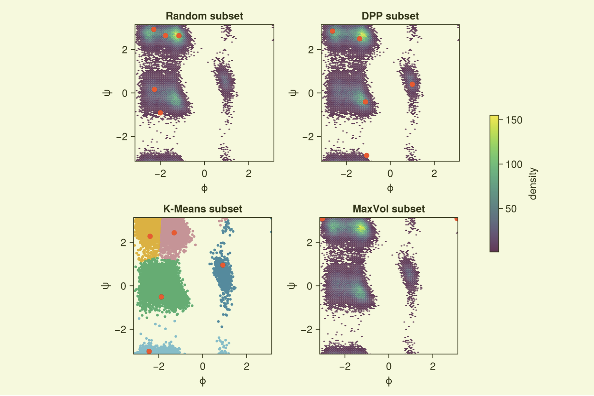
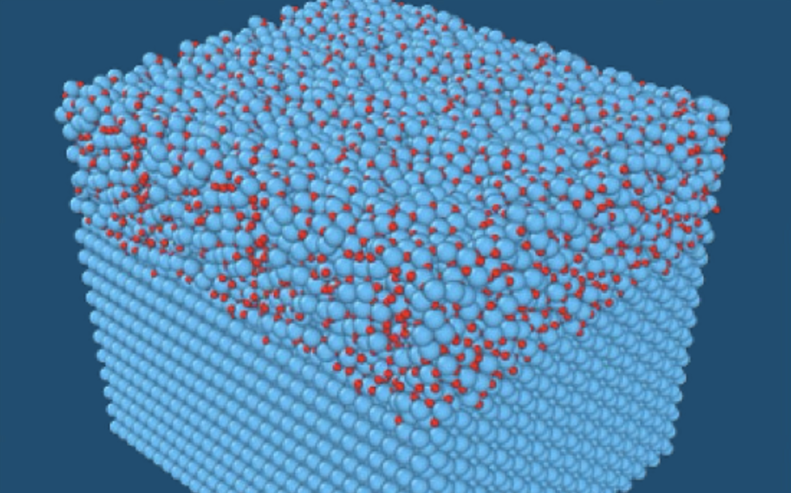
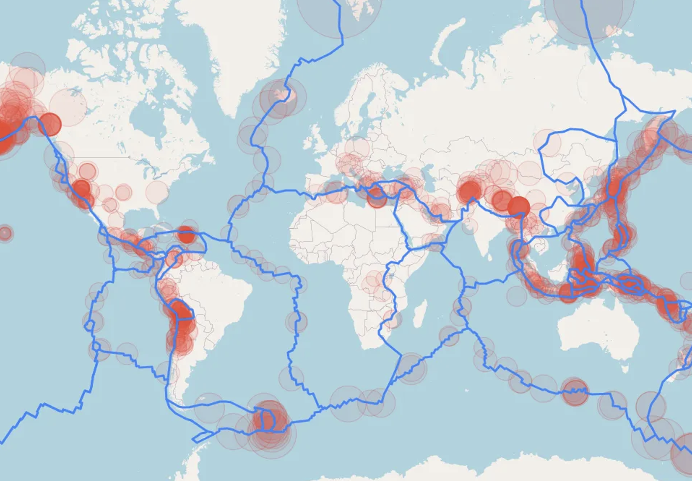

Joanna Zou
Applied Statistics & Stochastics
My research integrates probabilistic models, drawing on data from simulations or experiments, with the governing equations of stochastic dynamical systems to predict complex phenomena in science and engineering.
My projects are on:
Theory
Leveraging tools from probability, inference and information theory, stochastic analysis, optimization, and operator theory to develop methods with mathematical guarantees.
Algorithms
Developing tractable algorithms for variational inference, sampling, active learning, Bayesian filtering, dimension reduction, and uncertainty quantification, implemented in Python and Julia.
Applications
Bringing theory into practice in AI-for-science disciplines such as optimal control, molecular dynamics, structural dynamics, diffusion models, risk analysis, and digital twins.
About
I am a Postdoctoral Associate at MIT in the Laboratory for Information & Decision Systems (LIDS). In May 2026, I completed my PhD in Computational Science & Engineering with a minor in Analysis & Probability in the Uncertainty Quantification Group at MIT, advised by Youssef Marzouk. During my PhD, I was a visiting fellow with the SFB 1294 Collaborative Research Center for Data Assimilation at the University of Potsdam, hosted by Han Cheng Lie, and a PhD research intern in the Combustion Research Facility at Sandia National Laboratories, hosted by Habib Najm.
Prior to starting my PhD in 2022, I was a Fulbright pre-doctoral researcher at TU Delft hosted by Eliz-Mari Lourens and Alice Cicirello. I was a software development associate with the NHERI Computational Modeling and Simulation Center and a research intern in the Advanced Technology & Research team at Arup. I received my Masters of Science in Structural Engineering from Stanford University, supported by the Stanford School of Engineering Graduate Fellowship, in 2020. I graduated magna cum laude with a Bachelors of Science in Civil Engineering and minor in Architecture from Columbia University in 2018.
With an interdisciplinary background, I am passionate about both fundamental research in mathematics and applied research in a wide range of fields, including AI-driven materials design, climate forecasting, urban sustainability, generative modeling, and decision-making under uncertainty.
Connect
Email: jjzou (at) mit (dot) edu LinkedIn Google Scholar Github
News
| May 2026 | Our preprint of “Stein kernelized molecular dynamics for active learning of interatomic potentials” is now on ArXiv. | |
| Apr 2026 | I defended my thesis, “Goal-Oriented Learning of Stochastic Dynamical Systems”, for the PhD in Computational Science & Engineering at MIT. | |
| Mar 2026 | I gave a talk and co-organized two minisymposia, Advances in MCMC Sampling Methods and UQ for Multiscale Modeling in Computational Chemistry, at the SIAM Conference for Uncertainty Quantification in Minneapolis, MN. | |
| Mar 2026 | Our preprint of “Goal-oriented learning of stochastic differential equations using error bounds on path-space observables” is now on ArXiv. | |
| Nov 2025 | I presented a poster on “A goal-oriented loss for learning transition times with machine learning potentials” at the CoMPASs Workshop at the International Center for Mathematical Sciences (ICMS) in Edinburgh, UK. | |
| May 2025 | I gave a talk and co-organized a minisymposium, Learning Dynamical Systems and Their Observable Statistics, at the SIAM Conference on Applications of Dynamical Systems in Denver, CO, along with Matthew Levine and Han Cheng Lie. |
Current Projects



Past Projects


